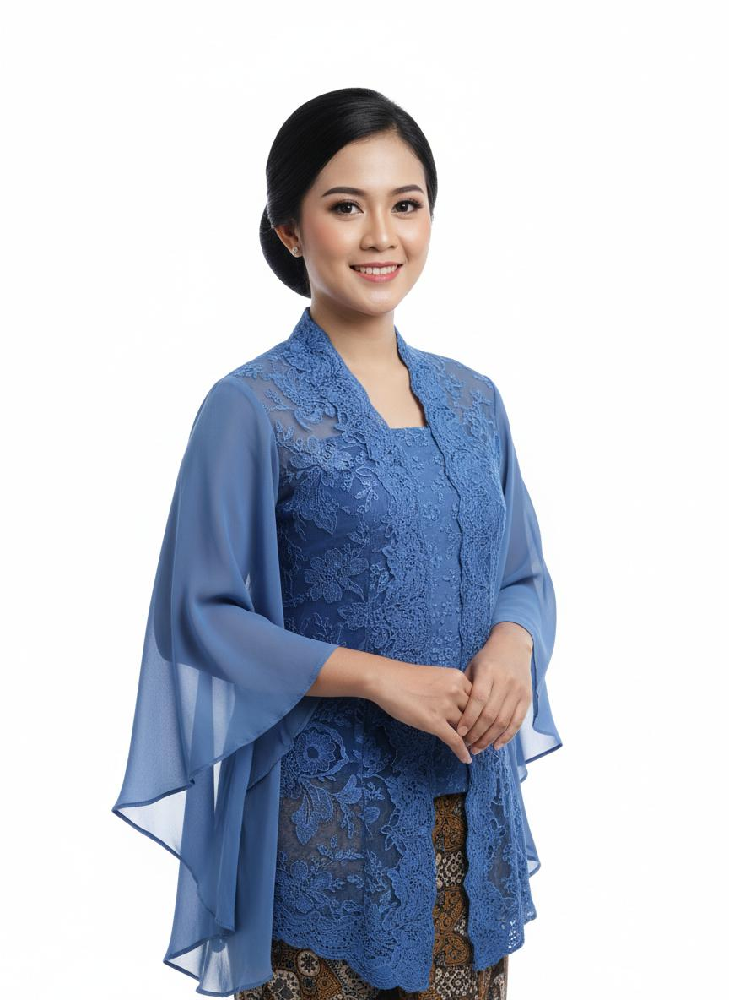

Tenaga Pendidik & Kependidikan
SMP Negeri 1 Contoh memiliki tenaga pendidik dan kependidikan yang profesional, berkompeten, dan berdedikasi tinggi. Berikut adalah data lengkap guru dan tenaga kependidikan kami:
52
Guru
8
Tendik
15
Guru S2
100%
Bersertifikasi
Guru Kelas
Dra. Siti Aminah, M.Pd.
Guru Kelas VII-A
Matematika

Drs. Budi Santoso, M.Si.
Guru Kelas VII-B
IPANurul Hidayah, S.Pd.
Guru Kelas VII-C
B. IndonesiaAhmad Fauzi, S.Pd., M.Pd.
Guru Kelas VIII-A
IPSDewi Lestari, S.S., M.Pd.
Guru Kelas VIII-B
B. InggrisHendra Gunawan, S.Kom.
Guru Kelas VIII-C
TIKGuru Mata Pelajaran
| No | Nama | NIP | Mata Pelajaran | Pendidikan |
|---|---|---|---|---|
| 1 | Drs. H. Ahmad Fauzi, M.Pd. | 196501011991011001 | Pendidikan Agama Islam | S2 Pendidikan Agama Islam |
| 2 | Dra. Rina Susanti, M.Pd. | 196702121992022002 | Matematika | S2 Pendidikan Matematika |
| 3 | Dr. Andi Wijaya, M.Pd. | 196803031993031003 | Ilmu Pengetahuan Alam | S3 Pendidikan Sains |
| 4 | Sri Wahyuni, S.Pd., M.Pd. | 197004041994042004 | Ilmu Pengetahuan Sosial | S2 Pendidikan Sejarah |
| 5 | Budi Prasetyo, S.Pd., M.Hum. | 197105051995051005 | Bahasa Indonesia | S2 Sastra Indonesia |
| 6 | Maya Anggraini, S.Pd., M.Pd. | 197206061996062006 | Bahasa Inggris | S2 Pendidikan Bahasa Inggris |
| 7 | Dedi Kurniawan, S.T., M.Pd. | 197307071997071007 | Penjaskes | S2 Pendidikan Jasmani |
| 8 | Fajar Hidayat, S.Kom., M.Pd. | 197408081998081008 | Teknologi Informasi | S2 Teknologi Pendidikan |
| 9 | Lina Marlina, S.Sn., M.Sn. | 197509091999091009 | Seni Budaya | S2 Seni Rupa |
| 10 | Rudi Hartono, S.Pd., M.Pd. | 19761010199010010 | Prakarya | S2 Pendidikan Teknik |
Tenaga Kependidikan
| No | Nama | NIP | Jabatan |
|---|---|---|---|
| 1 | Hendra Gunawan, S.Kom. | 198001011999011001 | Kepala Tata Usaha |
| 2 | Siti Nurhayati, A.Md. | 198502022000022002 | Operator Sekolah |
| 3 | Ahmad Syafii, S.Pd. | 198703032001031003 | Pembina OSIS |
| 4 | Dina Amelia, S.E. | 198904042002042004 | Bendahara |
| 5 | Bima Sakti, A.Md. | 199005052003051005 | Petugas Perpustakaan |
| 6 | Rizky Pratama | - | Petugas Laboratorium |
| 7 | Siti Aisyah | - | Petugas Tata Usaha |
| 8 | Faisal Rahman | - | Teknisi IT |